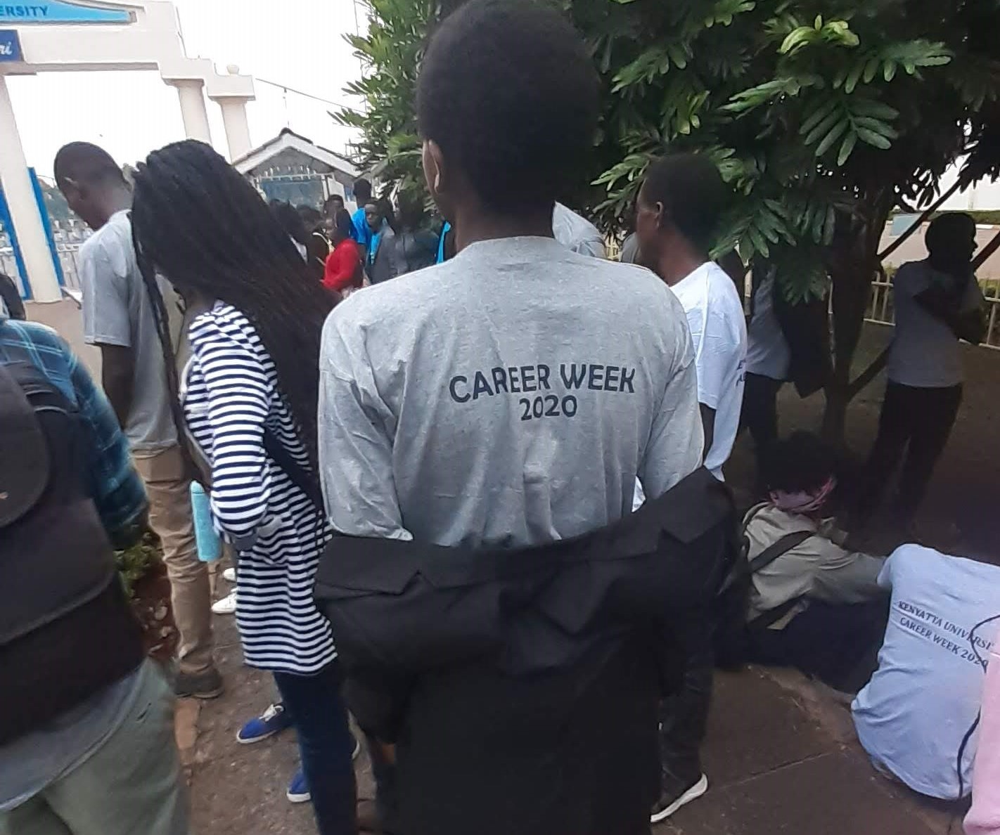

Abraham Mwaura
Student Biomedical engineering | Software developer | Certified Huawei Routing and switching Engineer
Am currently pursuing Biomedical Engineering at Kenyatta university. Additionally am an avid tech guy, having done quite a number of computing certifications online. Am fully proficient in C++. Elementary proficient in c-like languages, python, html, javascript, CSS and sequel.
My major vision is to use current technology to better healthcare, humanity and livelihood
Featured Projects
Stair climbing wheelchair

I was the chief Project patnersdesign engineer in the project and I also worked as an assitant software developer. I helped in writing the code for the system and also improving the design of the wheeelchair
View project / case studyplanting trees in a nearby primary school

I took part in the tree planting as a member of our subcounty students association. We managed to plant a total of 70 trees around the school and later on we had some team building activities and shared a meal together. We also shared our different experiences staying at home during the pandemic
View project / case studyPlanning and organising of the career week 2020
I applied and was successfully accepted as one of the ambassadors during the planning and the implementation of the Kenyatta university career weel 2020. The event was a whole one week event. We had events like the highschoolers day and the form four leavers day where I helped in ushering and showing the new students around. I managed to learn a lot of professional skills and networked with some employees from some big companies in the country
View project / case study
Offering mentorship to highschoolers
This happens to be one of the most interesting projects that I've ever being part of. We visited a school Known as Kiboron girls and there we did a lot in terms of mentoring the girls and interacting with them. We shared some various study methodologies and practises to uphold discipline and good conduct while at school
View project / case studyWork Experience
I have being involved in quite a number of jobs and all along I have learned a lot of critical interpersonal skills and the various modes of giving your best in any kind of work that am involved in
Peer teacher
Immaculate Heart of Mary Kairi Girls
January to August 2019
I was working as as a sciences teacher where I taught physics, biology and chemistry. I was also taking geography during my free time
Store keeper
Jason and sons construction company ltd
July to August 2020/p>
Much of the work was to make sure that the accounting was running fine. I also tried to run a quantity analysis of the materials that were needed at a particular proficient I was also issuing pay to some of the workers that used to work there
Education
Kenyatta university- Nairobi
Biomedical Engineering, 2019-2023
served as a class representative, a peer mentor, career week ambassador and an official in the society of biomedical engineers
Murang'a high school- Murang'a
kenya certificate of secondary Education, 2015-2018
served as an academic committee leader,a member of the chess club. Battalion header before our main exams
LinkedIn Learning
Become a software developer, August 2020- October 2020
I learned core technologies in web development and making software which include, HTML, CSS, javascript, sequel and foundations of programming languages